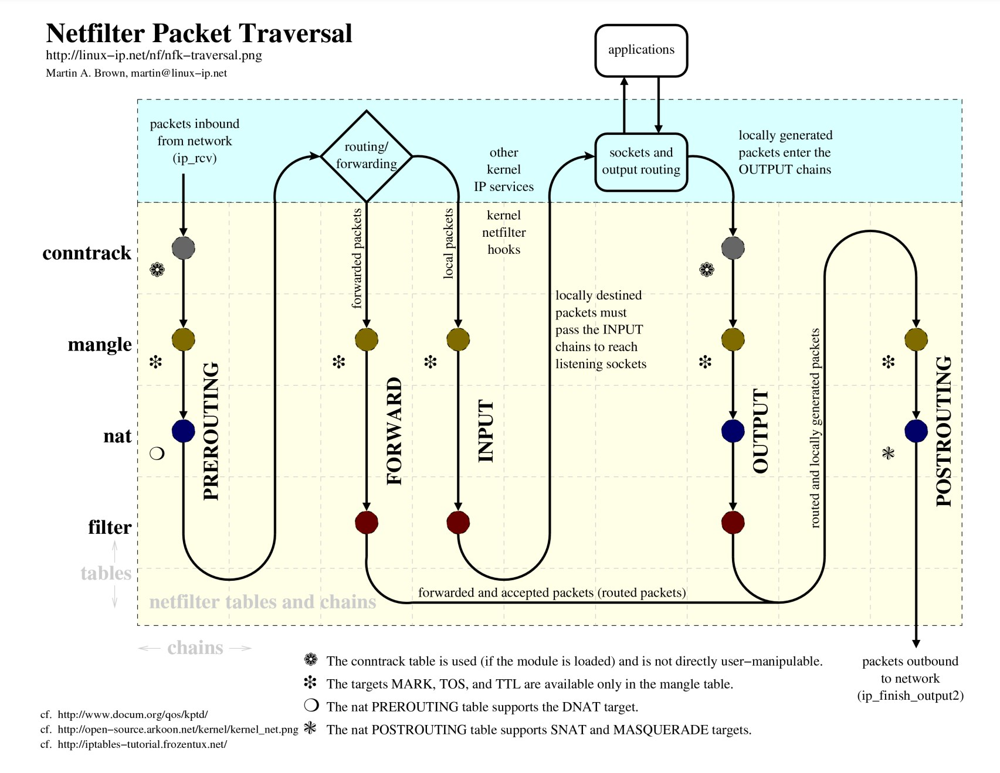

nf五链四表
参考资料
- netfilter的四表五链概述
- 深入理解 iptables 和 netfilter 架构
- 五链：五个链也分别被形象的称为五个钩子（hook）函数
- INPUT链——进来的数据包应用此规则链中的策略
- OUTPUT链——外出的数据包应用此规则链中的策略
- FORWARD链——转发数据包时应用此规则链中的策略
- PREROUTING链——对数据包作路由选择前应用此链中的规则（数据包进来的时侯）
- POSTROUTING链——对数据包作路由选择后应用此链中的规则（数据包出来的时侯）
- 四表：
- Filter表：过滤数据包
- Nat表：用于网络地址转换（IP、端口）
- Mangle表：可修改数据包的服务类型、TTL、并且可以配置路由实现QOS
- Raw表：唯一的用处就是控制数据包绕过连接跟踪
- （其实还有security表：作用是给包打上SELinux标记）
- （conntrack是netfilter实现的连接跟踪机制，是NAT和iptables状态匹配的基础）
处理过程将沿着列从上向下执行
| Tables\Chains | PREROUTING | INPUT | FORWARD | OUTPUT | POSTROUTING |
|---|---|---|---|---|---|
| (路由判断) | Y | ||||
| raw | Y | Y | |||
| (连接跟踪） | Y | Y | |||
| mangle Y | Y | Y | Y | Y | Y |
| nat (DNAT) | Y | Y | |||
| (路由判断) | Y | Y | |||
| filter | Y | Y | Y | ||
| security | Y | Y | Y | ||
| nat (SNAT) | Y | Y | Y |
简化版流程

完整版流程